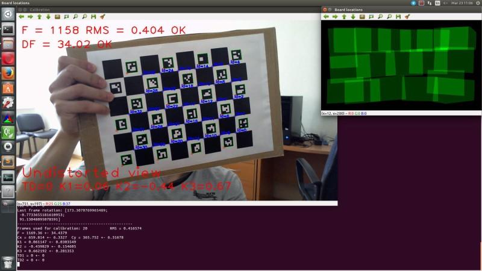
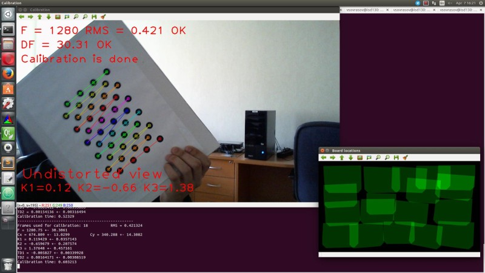

According to classical calibration technique user must collect all data first and when run cv::calibrateCamera function to obtain camera parameters. If average re-projection error is huge or if estimated parameters seems to be wrong, process of selection or collecting data and starting of cv::calibrateCamera repeats.
Interactive calibration process assumes that after each new data portion user can see results and errors estimation, also he can delete last data portion and finally, when dataset for calibration is big enough starts process of auto data selection.
Main application features
The sample application will:
- Determine the distortion matrix and confidence interval for each element
- Determine the camera matrix and confidence interval for each element
- Take input from camera or video file
- Read configuration from XML file
- Save the results into XML file
- Calculate re-projection error
- Reject patterns views on sharp angles to prevent appear of ill-conditioned jacobian blocks
- Auto switch calibration flags (fix aspect ratio and elements of distortion matrix if needed)
- Auto detect when calibration is done by using several criteria
- Auto capture of static patterns (user doesn't need press any keys to capture frame, just don't move pattern for a second)
Supported patterns:
- Black-white chessboard
- Asymmetrical circle pattern
- Dual asymmetrical circle pattern
- chAruco (chessboard with Aruco markers)
Description of parameters
Application has two groups of parameters: primary (passed through command line) and advances (passed through XML file).
Primary parameters:
All of this parameters are passed to application through a command line.
-[parameter]=[default value]: description
- -v=[filename]: get video from filename, default input – camera with id=0
- -ci=[0]: get video from camera with specified id
- -flip=[false]: vertical flip of input frames
- -t=[circles]: pattern for calibration (circles, chessboard, dualCircles, chAruco)
- -sz=[16.3]: distance between two nearest centers of circles or squares on calibration board
- -dst=[295] distance between white and black parts of daulCircles pattern
- -w=[width]: width of pattern (in corners or circles)
- -h=[height]: height of pattern (in corners or circles)
- -of=[camParams.xml]: output file name
- -ft=[true]: auto tuning of calibration flags
- -vis=[grid]: captured boards visualization (grid, window)
- -d=[0.8]: delay between captures in seconds
- -pf=[defaultConfig.xml]: advanced application parameters file
Advanced parameters:
By default values of advanced parameters are stored in defaultConfig.xml
3 <
charuco_dict>0</
charuco_dict>
4 <
charuco_square_lenght>200</
charuco_square_lenght>
5 <
charuco_marker_size>100</
charuco_marker_size>
6 <
calibration_step>1</
calibration_step>
7 <
max_frames_num>30</
max_frames_num>
8 <
min_frames_num>10</
min_frames_num>
9 <
solver_eps>1
e-7</
solver_eps>
10 <
solver_max_iters>30</
solver_max_iters>
11 <
fast_solver>0</
fast_solver>
12 <
frame_filter_conv_param>0.1</
frame_filter_conv_param>
13 <
camera_resolution>1280 720</
camera_resolution>
- charuco_dict: name of special dictionary, which has been used for generation of chAruco pattern
- charuco_square_lenght: size of square on chAruco board (in pixels)
- charuco_marker_size: size of Aruco markers on chAruco board (in pixels)
- calibration_step: interval in frames between launches of cv::calibrateCamera
- max_frames_num: if number of frames for calibration is greater then this value frames filter starts working. After filtration size of calibration dataset is equals to max_frames_num
- min_frames_num: if number of frames is greater then this value turns on auto flags tuning, undistorted view and quality evaluation
- solver_eps: precision of Levenberg-Marquardt solver in cv::calibrateCamera
- solver_max_iters: iterations limit of solver
- fast_solver: if this value is nonzero and Lapack is found QR decomposition is used instead of SVD in solver. QR faster than SVD, but potentially less precise
- frame_filter_conv_param: parameter which used in linear convolution of bicriterial frames filter
- camera_resolution: resolution of camera which is used for calibration
Note: charuco_dict, charuco_square_lenght and charuco_marker_size are used for chAruco pattern generation (see Aruco module description for details: Aruco tutorials)
Default chAruco pattern:
Dual circles pattern
To make this pattern you need standard OpenCV circles pattern and binary inverted one. Place two patterns on one plane in order when all horizontal lines of circles in one pattern are continuations of similar lines in another. Measure distance between patterns as shown at picture below pass it as dst command line parameter. Also measure distance between centers of nearest circles and pass this value as sz command line parameter.
This pattern is very sensitive to quality of production and measurements.
Data filtration
When size of calibration dataset is greater then max_frames_num starts working data filter. It tries to remove "bad" frames from dataset. Filter removes the frame on which \(loss\_function\) takes maximum.
\[loss\_function(i)=\alpha RMS(i)+(1-\alpha)reducedGridQuality(i)\]
RMS is an average re-projection error calculated for frame i, reducedGridQuality is scene coverage quality evaluation without frame i. \(\alpha\) is equals to frame_filter_conv_param.
Calibration process
To start calibration just run application. Place pattern ahead the camera and fixate pattern in some pose. After that wait for capturing (will be shown message like "Frame #i captured"). Current focal distance and re-projection error will be shown at the main screen. Move pattern to the next position and repeat procedure. Try to cover image plane uniformly and don't show pattern on sharp angles to the image plane.

If calibration seems to be successful (confidence intervals and average re-projection error are small, frame coverage quality and number of pattern views are big enough) application will show a message like on screen below.

Hot keys:
- Esc – exit application
- s – save current data to XML file
- r – delete last frame
- d – delete all frames
- u – enable/disable applying of undistortion
- v – switch visualization mode
Results
As result you will get camera parameters and confidence intervals for them.
Example of output XML file:
3 <
calibrationDate>
"Thu 07 Apr 2016 04:23:03 PM MSK"</
calibrationDate>
4 <
framesCount>21</
framesCount>
6 1280 720</
cameraResolution>
7 <
cameraMatrix type_id=
"opencv-matrix">
12 1.2519588293098975
e+03 0. 6.6684948780852471
e+02 0.
13 1.2519588293098975
e+03 3.6298123112613683
e+02 0. 0. 1.</
data></
cameraMatrix>
14 <
cameraMatrix_std_dev type_id=
"opencv-matrix">
19 0. 1.2887048808572649
e+01 2.8536856683866230
e+00
20 2.8341737483430314
e+00</
data></
cameraMatrix_std_dev>
21 <
dist_coeffs type_id=
"opencv-matrix">
26 1.3569117181595716
e-01 -8.2513063822554633
e-01 0. 0.
27 1.6412101575010554
e+00</
data></
dist_coeffs>
28 <
dist_coeffs_std_dev type_id=
"opencv-matrix">
33 1.5570675523402111
e-02 8.7229075437543435
e-02 0. 0.
34 1.8382427901856876
e-01</
data></
dist_coeffs_std_dev>
35 <
avg_reprojection_error>4.2691743074130178
e-01</
avg_reprojection_error>


 1.8.11
1.8.11